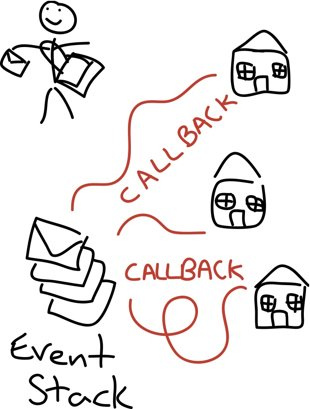

Node.js is a platform built on Chrome's JavaScript runtime for easily building fast, scalable network applications.
Find Me at Twitter : Aditya Khajuria
Find Code at GitHub: Node.js examples
Website address Nodejs
JavaScript (JS) is an interpreted computer programming language. As part of web browsers, implementations allow client-side scripts to interact with the user, control the browser, communicate asynchronously, and alter the document content that is displayed.
Source Wikipedia
Node.js allows you to run JavaScript code in the backend, outside a browser.
In order to execute the JavaScrip you intend to run in the backend, it needs to be interpreted and, well, executed. This is what Node.js does, by making use of Google’s V8 VM, the same runtime environment for JavaScript that Google Chrome uses.
Node.js ships with a lot of useful modules, so you don’t have to write everything from scratch, like for example something that outputs a string on the console.
Thus, Node.js is really two things: a runtime environment and a library.
First Node.js application: “Hello World”.
Open a file and write
console.log("Hello World");
node helloworld.js
Create the file server.js in the root directory of your project, and fill it with the following code:
var http = require("http");
http.createServer(function(request, response) {
response.writeHead(200, {"Content-Type": "text/plain"});
response.write("Hello World");
response.end();
}).listen(8888);
node server.js
In JavaScript, functions can be passed around like any other value.
function say(word) {
console.log(word);
}
function execute(someFunction, value) {
someFunction(value);
}
execute(say, "Hello");
We pass the function say as the first parameter to the execute function. Not the return value of say, but say itself!
We can define and pass a function as a parameter to another function in-place:
function execute(someFunction, value) {
someFunction(value);
}
execute(function(word){ console.log(word) }, "Hello");
We define the function we want to pass to execute right there at the place where execute expects its first parameter.
This way, we don’t even need to give the function a name, which is why this is called an anonymous function.
Why Node.js applications have to be written this way ?
PHP Code to access the file
<?php
echo "Starting\n";
$contents = file_get_contents("./file/sample.txt");
echo "\nContent of file: " . $contents . "\n";
echo "Finished\n";
?>
Node.js code to access the file
var fs = require("fs");
console.log("Starting");
fs.readFile("./file/sample.txt", function(error, data) {
console.log("Contents : " + data);
});
console.log("Carry on executing");

Reading filesWriting filesLoading a configuration fileWatching fileAsynchronous mode
var fs = require("fs");
console.log("Starting");
fs.readFile("./file/sample.txt", function(error, data) {
console.log("Contents : " + data);
});
console.log("Carry on executing");
Synchronous mode
var fs = require("fs");
console.log("Starting");
var content = fs.readFileSync("./file/sample.txt");
console.log("Contents : " + content);
console.log("Carry on executing");
Asynchronous mode
var fs = require("fs");
console.log("Starting writing...");
fs.writeFile("./file/sample.txt", "Hello AFT !! Synchronous", function(error) {
console.log("Written file");
});
console.log("Finished");
Synchronous mode
var fs = require("fs");
console.log("Starting writing...");
fs.writeFileSync("./file/sample.txt", "Hello AFT !! Synchronous");
console.log("Finished");
var fs = require("fs");
console.log("Starting");
var config = JSON.parse(fs.readFileSync("./file/config.json"));
console.log("contents : ", config);
fs.watchFile("./file/config.json", function(current, previous) {
console.log("Config changed ");
config = JSON.parse(fs.readFileSync("./file/config.json"));
console.log("New config file ", config);
});
Listen on portReceive an HTTP requestSend a response backRouting based on URLLoading static files based on the URL
var http = require("http");
var host = "127.0.0.1";
var port = 8888;
console.log("Starting");
var server = http.createServer(function(request, response) {
response.writeHead(200, {"Content-type": "text/plain"});
response.end("Hello World");
});
server.listen(port, host, function() {
console.log("Listening on " host + ":" + port);
});
var http = require("http");
var fs = require("fs");
console.log("Starting");
var config = JSON.parse(fs.readFileSync("./file/config.json"));
var host = config.host;
var port = config.port;
var server = http.createServer(function(request, response) {
console.log("Received the request" + request.url);
fs.readFile("./public" + request.url, function(error, data) {
if(error ) {
response.writeHead(404, {"Content-type": "text/plain"});
response.end("Page not found");
} else {
response.writeHead(200, {"Content-type": "text/html"});
response.end(data);
}
});
});
server.listen(port, host, function() {
console.log("Listening on port - " + port + " and host " + host );
});
fs.watchFile("./file/config.json", function() {
config = JSON.parse(fs.readFileSync("./file/config.json"));
server.close();
host = config.host;
port = config.port;
server.listen(port, host, function() {
console.log("Now Listening on new port - " + port + " and host " + host );
});
});
Install packagesUpdate packagesnpm is a package manager for node. You can use it to install and publish your node programs. It manages dependencies and does other cool stuff.
Source : NPM
Install node.js, NPM comes with it.
Example :- npm install <underscore>
First node looks into its internal modules and then in node_modules directory.
var underscore = require("underscore");
To update a module
npm update underscore
Install Express moduleSetup a web server using ExpressAdd up our configuration fileBasic routing and templating
node.js web application framework
Source : expressjs.com/
Install express
npm install express
var fs = require("fs");
var config = JSON.parse(fs.readFileSync("./file/config.json"));
var host = config.host;
var port = config.port;
var express = require("express");
var app = express();
console.log("Started");
app.get("/", function(request, response) {
response.send("Hello Adi");
});
app.listen(port, host);
var fs = require("fs");
...
console.log("Started");
app.use(app.router);
app.use(express.static(__dirname + "/public"));
app.get("/", function(request, response) {
...
var fs = require("fs");
....
var users = {
"1" : {
"name" : "John",
"empId" : "123"
},
"2" : {
"name" : "Joy",
"empId" : "456"
}
}
...
app.get("/", function(request, response) {
response.send("Hello Adi");
});
app.get("/hello/:text", function(request, response) {
response.send("Hello " + request.params.text);
});
app.get("/user/:id", function(request, response) {
var user = users[request.params.id];
if(user) {
response.send("Name is " + user.name + " Emp id is " + user.empId);
} else {
response.send("Sorry can't find the user :(", 404);
}
});
app.listen(port, host);
Courtesy of github.com/
Making a HTTP request to Github APICreate a requestParse the responseWrap them in a functionCourtesy of developer.github.com/.
var https = require("https");
var username = "name";
var options = {
host: "api.github.com",
path: "/users/" + username + "/repos",
method: "GET",
'headers': {
'User-Agent': "username"
}
};
var request = https.request(options, function(response) {
var body = '';
response.on("data", function(chunk) {
body += chunk.toString('utf8');
});
response.on("end", function() {
console.log("Body: ", body);
});
});
request.end();
var https = require("https");
...
response.on("end", function() {
var repos = [];
var json = JSON.parse(body);
json.forEach(function(repo) {
repos.push({
name: repo.name,
description: repo.description
});
});
console.log("Repos : ", repos);
});
...
var https = require("https");
function getRepo(username, callback) {
//var username = "name";
var options = {
host: "api.github.com",
path: "/users/" + username + "/repos",
method: "GET",
'headers': {
'User-Agent': "username"
}
};
var request = https.request(options, function(response) {
var body = '';
response.on("data", function(chunk) {
body += chunk.toString('utf8');
});
response.on("end", function() {
var repos = [];
var json = JSON.parse(body);
json.forEach(function(repo) {
repos.push({
name: repo.name,
description: repo.description
});
});
callback(repos);
});
});
request.end();
}
getRepo("node", function(repos) {
console.log("Aditya has " + repos.length + " repos");
});
getRepo("spring", function(repos) {
console.log("Spring has " + repos.length + " repos");
});
Create a NPM module of github code.Publish it to NPM for anyone to use.To publish create a package.json fileNeed to register at NPM.Push our code to directory.my_module.js
function hello() {
return "world";
}
module.exports.hellow = hello;
server.js
var myModule = require("./my_module.js");
console.log(myModule.hellow());
github.js
var https = require("https");
function getRepo(username, callback) {
//var username = "name";
var options = {
host: "api.github.com",
path: "/users/" + username + "/repos",
method: "GET",
'headers': {
'User-Agent': "username"
}
};
var request = https.request(options, function(response) {
var body = '';
response.on("data", function(chunk) {
body += chunk.toString('utf8');
});
response.on("end", function() {
var repos = [];
var json = JSON.parse(body);
json.forEach(function(repo) {
repos.push({
name: repo.name,
description: repo.description
});
});
callback(repos);
});
});
request.end();
}
module.exports.gitRepos = getRepo;
server.js
var gitR = require("./github.js");
gitR.gitRepos("username", function(repos) { console.log("Count : " , repos.length); });
This file gives NPM all the information about the module, e.g; name, description and version.
Run the following commnad in the terminal to start the process and do the settings as asked by NPM :
npm init
Now we have to send this to NPM , but first we have to create user account in NPM.
npm adduser
To publish it in NPM run the following commnad.
npm publish
To update change the version in package.json file and run the above command again.
Insert some dataQuery some dataIntegrate it with our web server